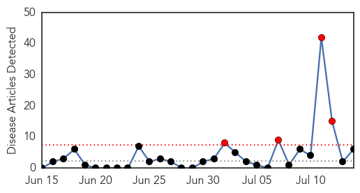
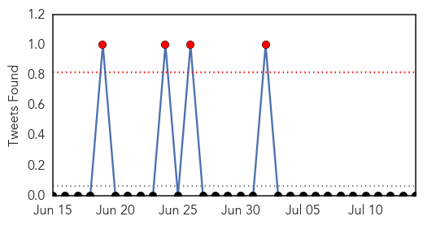
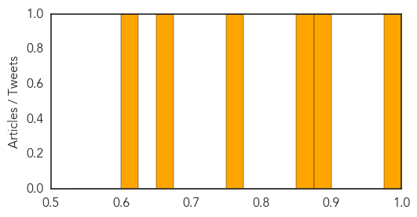

Toggle navigation
Early Warning
Daily Alerts
Influenza
Jul 14, 2014
Compare to:
-
Dengue Fever
Hemmorhagic Fever
Mold/Fungal Infection
Meningitis
Pertussis / Whooping Cough
Middle East Respiratory Syndrome
Cholera
Hepatitis
Chikungunya
Yellow Fever
Bubonic Plague
West Nile Virus
Swine Flu
Ebola
Measles
Unknown
Mumps
30 Day Trends
Web: 4
alerts
, 0
warnings
Twitter: 0
alerts
, 0
warnings
Top Articles:
0.991
Prevent the spread of influenza
0.892
CDC Responds to Anthrax and Bird Flu Blunders
0.865
Man driving more than four times over limit
0.750
Bio-Unsafety Level 3: Could the Next Lab Accident Result in a Pandemic?
0.662
The Leader of the Smallpox Eradication Effort Speaks About the Virus' Rediscovery
0.616
US anthrax probe reveals new bird flu mishap, widespread safety lapses
Top Tweets:
No tweets found for Jul 14, 2014
Web/News Articles

Tweets

Article Locations
Article Confidences
